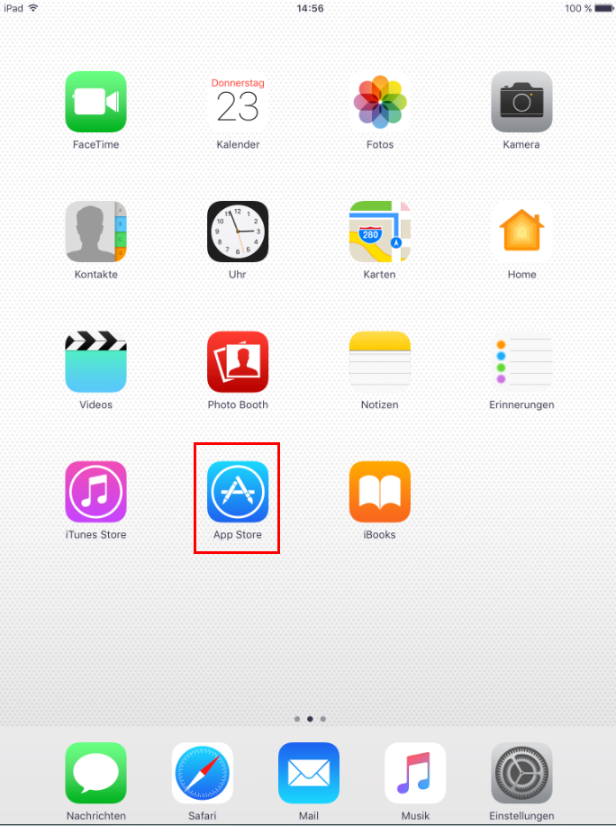
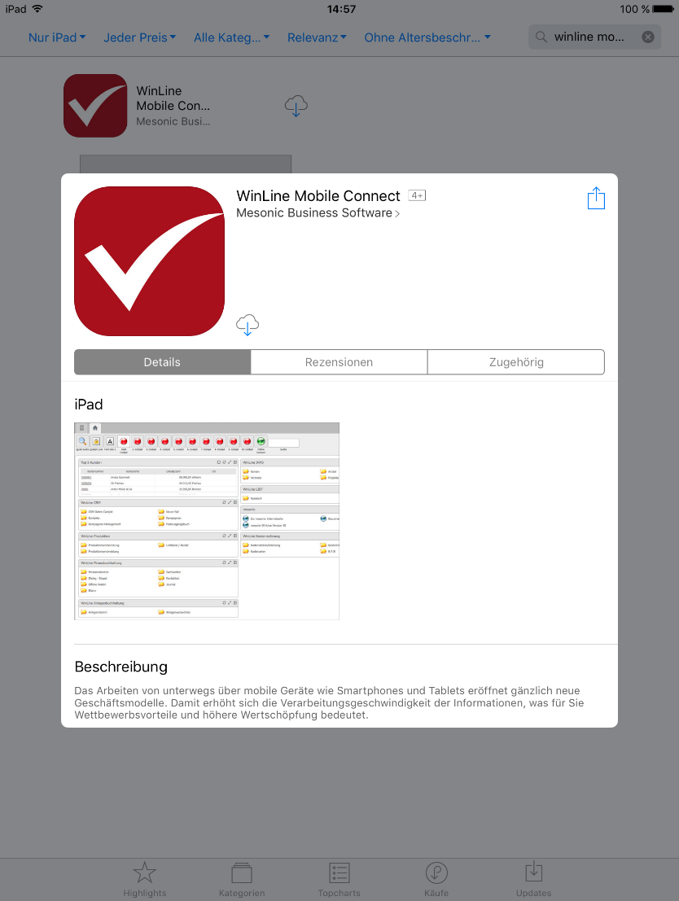
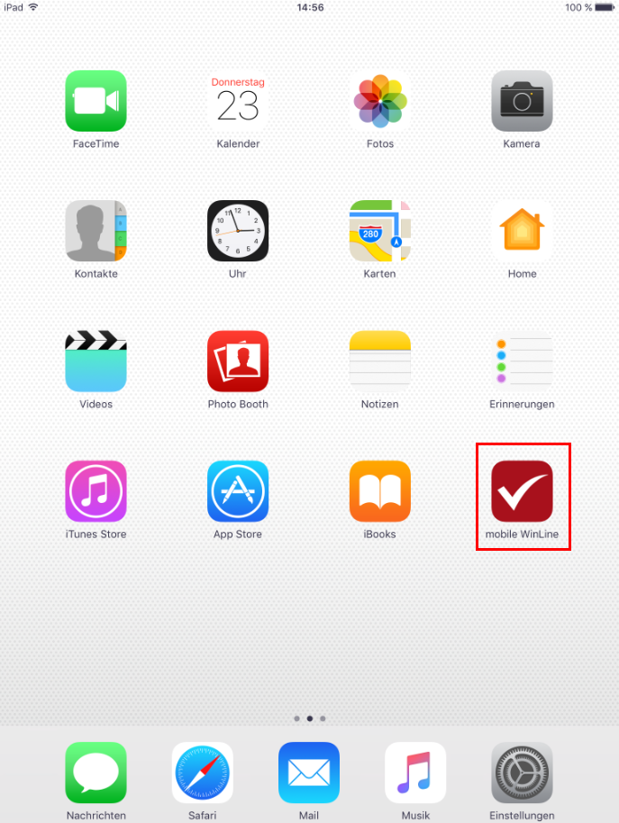

Zum Aufruf der WinLine mobile via Browser werden die IP und der bei der Einrichtung hinterlegte HTTP-Port als Adresse angegeben mit dem Zusatz "/MWL".
Beispiel:
http://192.168.XXX.XXX:82/MWL
Zum Aufruf der WinLine mobile via App kann diese über den App Store unter iOS oder den Play Store unter Android geladen werden.

Bei der Suche nach WinLine mobile wird die App "WinLine mobile" im App Store gefunden. Hier werden neben Detailinformationen, die Version etc. angezeigt.

Von dort aus kann die WinLine mobile am mobilen Endgerät installiert werden.
Nach der Installation wird diese als Icon am Bildschirm des mobilen Endgeräts - hier anhand von iOS - angezeigt.

Beim Öffnen der soeben installierten WinLine mobile Applikation kann zwischen Demo- und Vollversion gewählt werden.